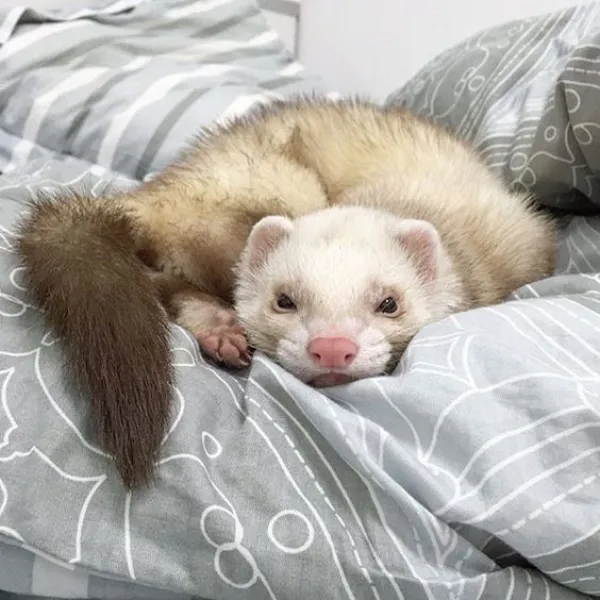
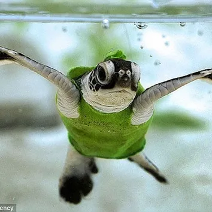
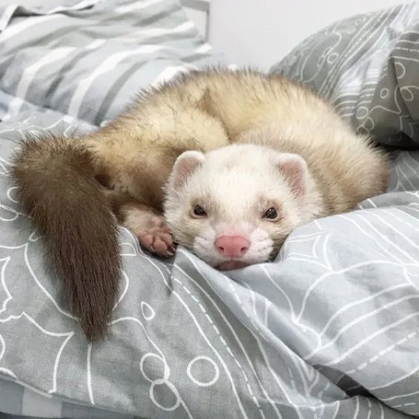
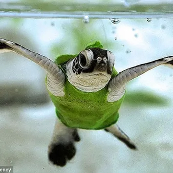

¿Qué beneficios tienen las mascotas?
Las mascotas pueden ser de diferentes especies, como perros, gatos, pájaros, peces, roedores, reptiles y otros animales exóticos. Además de ser compañeros leales, muchas mascotas también tienen beneficios terapéuticos para sus dueños, como reducir el estrés, la ansiedad y la depresión.
Las mascotas pueden proporcionar una amplia variedad de beneficios psicológicos para los seres humanos. Aquí hay algunos ejemplos:
- Reducción del estrés y la ansiedad: Las mascotas pueden reducir los niveles de estrés y ansiedad en los seres humanos. La presencia de una mascota puede reducir la frecuencia cardíaca y la presión arterial, lo que puede ayudar a las personas a sentirse más calmadas y relajadas.
- Mejora del estado de ánimo: Las mascotas pueden aumentar la producción de endorfinas, hormonas asociadas con la felicidad, lo que puede mejorar el estado de ánimo de sus dueños.
- Reducción de la sliedad: Las mascotas pueden brindar compañía y afecto, lo que puede ayudar a reducir la sensación de sliedad en las personas, especialmente en aquellos que viven slios.
- Mejora de la autoestima: Las mascotas pueden ayudar a mejorar la autoestima de sus dueños al brindarles una sensación de responsabilidad y cuidado hacia otro ser vivo.
- Desarrlilo de habilidades sociales: Las mascotas pueden ayudar a las personas a desarrlilar habilidades sociales, especialmente en el caso de los perros, que pueden requerir paseos diarios y tiempo en el parque, lo que puede aumentar la interacción social de sus dueños con otros propietarios de mascotas.
En resumen, las mascotas pueden proporcionar una gran cantidad de beneficios psicliógicos para los seres humanos, lo que puede mejorar la calidad de vida y la salud mental de sus dueños.

 


